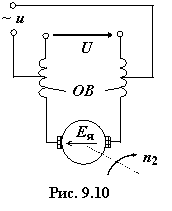

9.4. Микромашины постоянного тока >
Микромашины постоянного тока (мощностью от долей ватт до 750 Вт с частотой вращения вала от нескольких об/мин до 60000 об/мин) отличаются от обычных машин тем, что в большинстве случаев имеют меньшее число обмоток возбуждения (для возможности питания от однофазной сети переменного тока) или не имеют их вовсе. В последнем случае в качестве индукторов используют постоянные магниты. При этом отпадает необходимость в источнике питания и в скользящих контактах.
9.4.1. Универсальные коллекторные машины
Коллекторные двигатели имеют
мощность от десятков ватт до нескольких сотен ватт. Наибольшее
распространение в промышленности, в быту, в схемах автоматики получили универсальные
коллекторные двигатели с последовательной обмоткой возбуждения. Они могут
работать при питании как от сети постоянного тока, так и от однофазной сети
переменного тока с частотой 50 Гц (рис. 9.10).

По своему устройству универсальные коллекторные двигатели почти не отличаются от двигателей постоянного тока последовательного возбуждения. Их отличием является лишь то, что они имеют не литые, а шихтованные из листов электротехнической стали станину и полюсы. Последние необходимы для уменьшения потерь от явления гистерезиса и от вихревых токов, создаваемых переменным во времени магнитным потоком. Обмотка возбуждения этих двигателей состоит из двух катушек и делается секционированной. Как видно из схемы рис. 9.10, переменное напряжение сети подаётся не на всю обмотку возбуждения ОВ, а только на часть её с меньшим числом витков для уменьшения индуктивного сопротивления и радиопомех.
При таком включении ОВ частота вращения якоря n2 приблизительно одинаковая как при питании от сети постоянного тока, так и при питании от сети переменного тока, например, с напряжением U = 220 В. При питании двигателя от сети переменного тока ухудшается коммутация и усиливается искрение под щётками, поэтому якорную обмотку разделяют на много секций (с малым числом витков), а на коллекторе размещают много пластин (для уменьшения индуктируемых ЭДС в секциях якоря). КПД коллекторных двигателей переменного тока низок (менее 0,7).
Несмотря на недостатки коллекторные двигатели широко используют в устройствах бытовой техники: в пылесосах, вентиляторах, электроинструментах, швейных машинах, в медицинской технике и др., а также в устройствах автоматики. При питании как от источника постоянного напряжения, так и от источника переменного напряжения они допускают возможность плавного и широкого регулирования частоты вращения изменением подводимого к двигателю напряжения. Эти двигатели особенно широко применяют там, где при промышленной частоте 50 Гц требуется получить частоты вращения вала 4000...30000 об/мин, недостижимые при применении асинхронных и синхронных двигателей промышленной частоты без повышающего редуктора.
Широкое применение в промышленности нашли также тахогенераторы постоянного тока и микродвигатели независимого возбуждения.